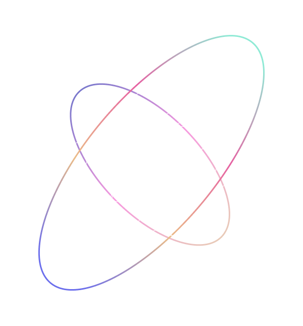
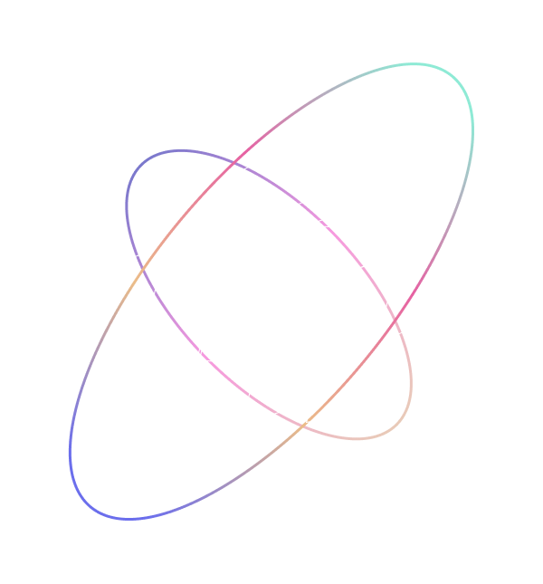

팬-아티스트 전용 공간 설계
이탈율과 참여율 개선
 

정답이 없는 상태에서 안간힘을 쓰면서 원하는 무언가에 가까워지고자 한다.
사용자 리서치부터 UX/UI 디자인, 반응형 웹과 디자인 시스템 구축까지
제품 전 과정을 리드했습니다.
사용성 테스트와 유저 인터뷰를 통해
이탈률 28.8% 감소 등 구체적인 성과를 만들어 냈습니다.
데이터 시각화 화면, 프로모션·랜딩 페이지 등
다양한 유형의 제품을 설계했습니다.
일본어가 특기로, IT SaaS 번역 및 서비스 전반 일본어 검수를 진행했습니다.
개인적으로 진행한 브랜딩 프로젝트 입니다.